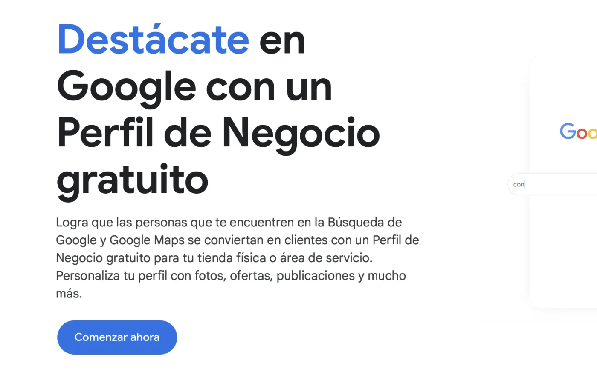
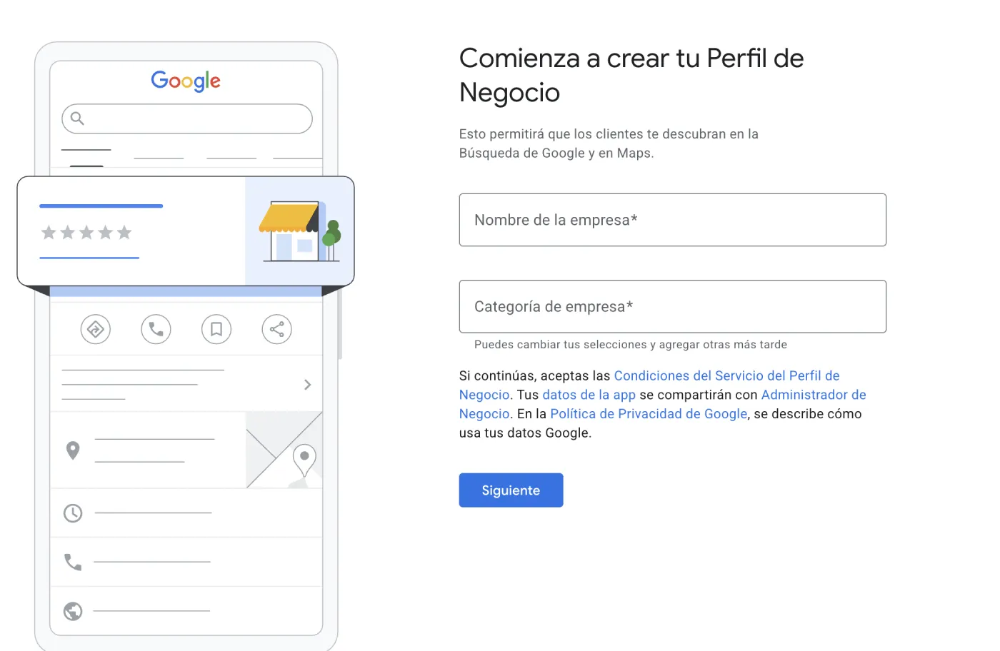
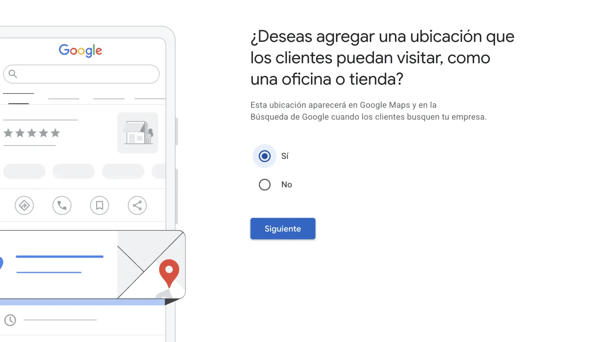
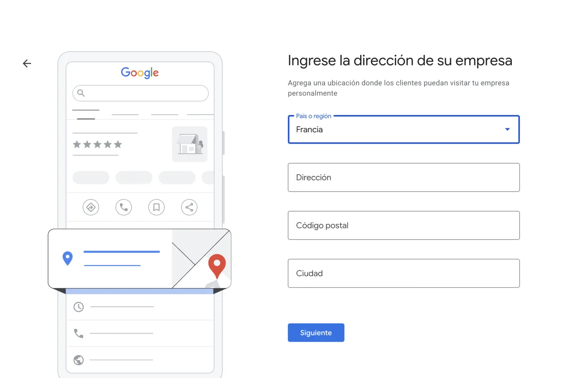
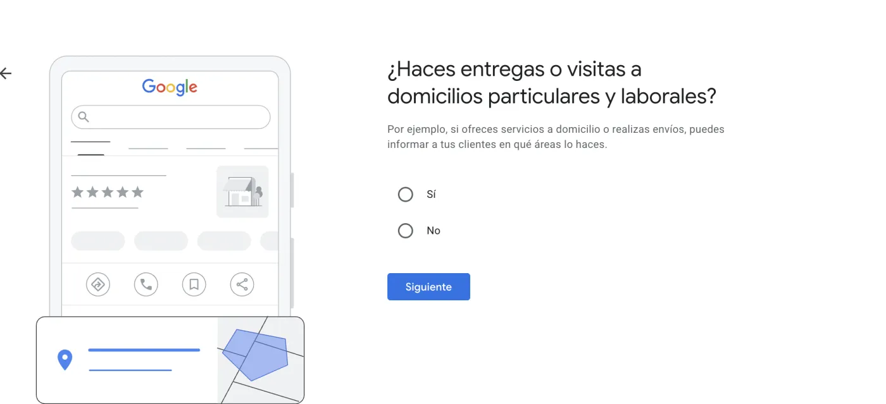

Cómo crear tu Perfil de Empresa en Google, paso a paso
Es gratis y hace que aparezcas en Google y en Google Maps cuando alguien busca lo que ofreces. Aquí está explicado sin tecnicismos, para que lo dejes montado hoy.
 Por Mafer Chang
·
·
5 min de lectura
Por Mafer Chang
·
·
5 min de lectura
Primero: ¿es para tu negocio?
El Perfil de Empresa de Google es para ti si atiendes a tus clientes en un lugar o en persona: una tienda, un local, o si vas donde está el cliente, a domicilio, en tu ciudad o zona.
Si tu negocio es 100 % online y sin trato en persona, Google no permite crear el perfil. En ese caso te conviene más trabajar tu web y tu visibilidad en buscadores.
Los pasos
-
Entra en la herramienta. Busca en Google "Perfil de Empresa de Google" o ve directo a google.com/business. Inicia sesión con tu cuenta de Google, la misma de tu Gmail sirve.

-
Escribe el nombre de tu negocio. Si ya aparece, lo seleccionas. Si no existe, Google te deja crearlo desde cero.

-
Elige tu categoría. La más precisa que encuentres, por ejemplo "pastelería", "asesoría contable" o "peluquería". Podrás añadir categorías extra más adelante.
-
Di dónde atiendes. ¿Tienes una dirección donde te visitan los clientes? La pones. ¿No tienes local pero vas donde están ellos? Entonces defines tu zona de servicio, tu ciudad o región, y no hace falta mostrar tu dirección.



Si vas tú donde está el cliente, a domicilio o en tu ciudad, aquí defines tu zona de servicio. -
Pon tu contacto. Teléfono y sitio web. Es un buen momento para enlazar tu web.
-
Verifica que el negocio es tuyo. Este paso es obligatorio para que tu perfil se muestre. Google te pedirá confirmarlo por teléfono, correo electrónico, vídeo o una tarjeta postal que envían a tu dirección. Sigue el método que te ofrezca.
-
Completa el perfil. Una vez verificado, rellénalo bien: descripción, horario, fotos y enlaces. Un perfil completo aparece más y da más confianza.
Para que de verdad te traiga clientes
- Fotos reales. Tu logo, una foto tuya y de lo que vendes. Las fotos reales generan más confianza que las de banco de imágenes.
- Pide reseñas. A tus clientes contentos, pídeles una reseña. Es lo que más peso tiene para que Google te muestre y para que otros se animen.
- Los mismos datos en todas partes. El nombre, el teléfono y la dirección tienen que ser idénticos en tu perfil, en tu web y en tus redes. Esa coincidencia es la que hace que Google confíe en que eres tú.
- Publica de vez en cuando. El perfil deja subir novedades y ofertas. No hace falta mucho, pero un perfil vivo rinde más que uno abandonado.
En resumen: créalo, verifícalo y complétalo con fotos reales y datos iguales a los de tu web. Con eso ya empiezas a aparecer cuando te buscan, sin gastar un euro.
Y cuando toque pagar por visitas
El perfil es visibilidad gratis, y es un buen primer paso antes de pagar por clics. Cuando llegue el momento de anunciarte, la serie antes de anunciarte recorre las cinco bases que conviene tener listas primero, empezando por si tu oferta se entiende en cinco segundos.
Y si la gente ya te encuentra pero no te escribe, el problema suele estar un paso más allá: en la página a la que llegan después del clic.
Preguntas que me hacen a menudo
¿El Perfil de Empresa de Google es gratis?
Sí. Crearlo, verificarlo y mantenerlo no cuesta nada, y es lo que hace que aparezcas en Google y en Google Maps cuando alguien busca lo que ofreces.
¿Puedo crearlo si mi negocio es solo online?
Si atiendes 100 % online y sin trato en persona, Google no permite crear el perfil. Es para negocios que atienden en un lugar o que van donde está el cliente. Si es tu caso, conviene trabajar la web y la visibilidad en buscadores.
¿Tengo que mostrar mi dirección si trabajo desde casa?
No. Si no tienes un local donde te visiten, defines una zona de servicio, tu ciudad o región, y el perfil se muestra sin mostrar tu dirección.